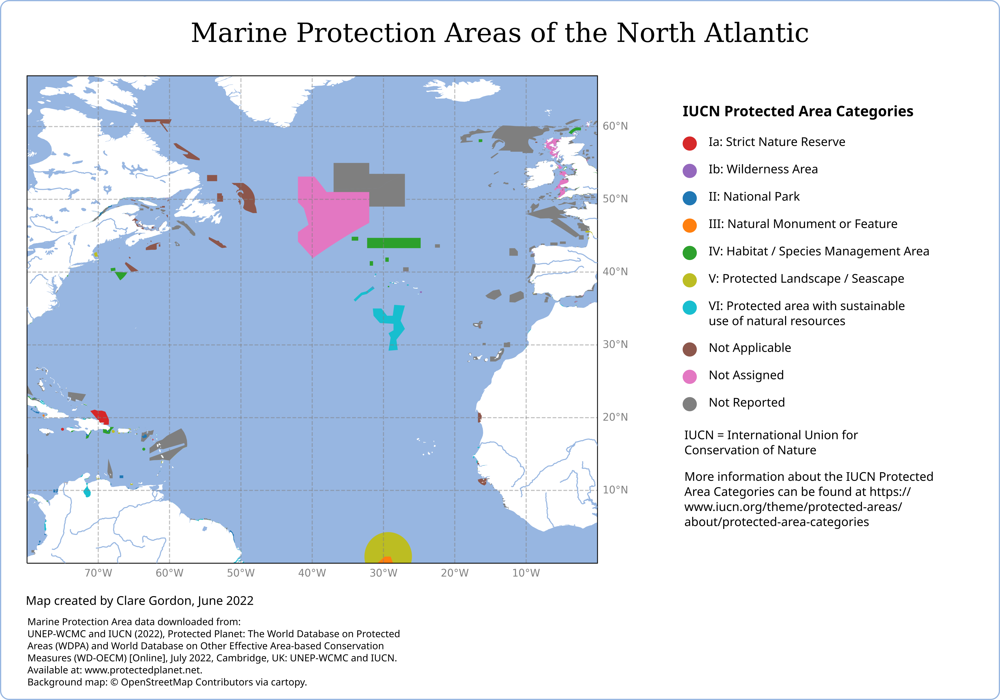

Data challenge: Natural Earth data
Marine Protection Areas of the North Atlantic

Data
- QGIS to merge shapefiles
- Python with cartopy package for main processing
- Inkscape for layout
What did I learn?
- Using cartopy package in python to provide a Natural Earth background for data in a GeoPandas geodataframe.
- Tried out both raster and vector backgrounds.
- Useful to discover data available at Protected Planet.